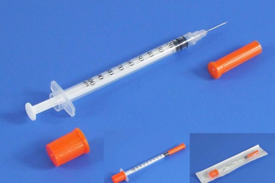
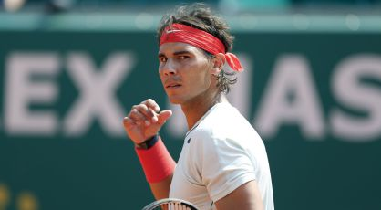
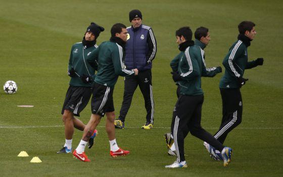

Los ciudadanos tratan de sobreponerse al terror después del atentado de este lunes en el maratón

La tercera víctima mortal del atentado de Boston es Lu Lingzi, una estudiante china, graduada por la Universidad de Boston.

Maduro prohíbe las protestas de la oposición tras la muerte de siete personas. Detenidos 135 ciudadanos por actos violentos
Sin embargo, los magistrados del Tribunal Europeo de Derechos Humanos no admiten las denuncias por torturas y malos tratos de la ex primera ministra

El ministro de Justicia: “El único partido condenado por financiación ilegal ha sido el PSOE”
El fiscal superior de Andalucía dice que resulta "inconcebible" que en empresas con directivos con retribuciones millonarias sean despedidos en ERE cientos de empleados
El extesorero Luis Bárcenas ocultó las donaciones ilegales de empresarios mediante 56 ingresos bancarios, todos ellos inferiores a 60.000 euros, entre 2002 y 2007
La punta se vuelve frágil, se puede romper dentro de la piel y pueden entrar en el cuerpo partes de su material. Puede producir una deficiencia de medicación.
El español debuta ganando 6-1 y 6-2 a Matosevic, que disfrutó de 0-2 y doble bola de break en la segunda manga
El Madrid, que apela a su memoria épica, no solo tendrá que cambiar su actitud de Dortmund para despachar al Borussia, sino mejorar notablemente su juego y tener mayor consistencia táctica
